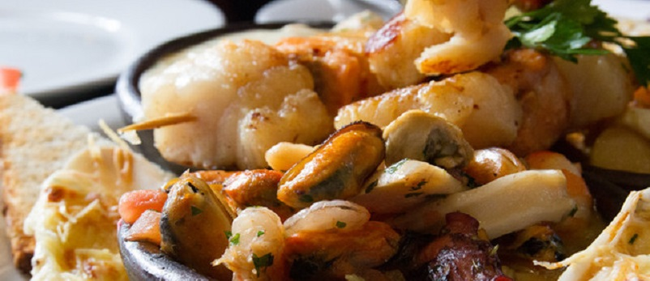
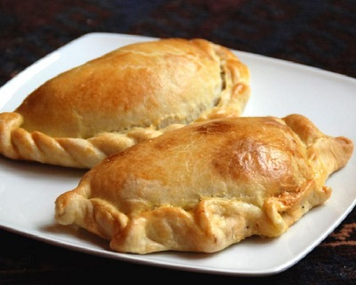
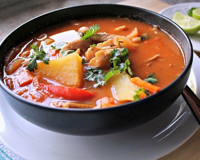

智利Chile


食物名稱：餡餅
食物介紹：
智利在慶祝國慶的時候，
一定會吃的食物就是餡餅。
最有名的餡PINO口味是由牛絞肉、葡萄乾、水煮蛋和橄欖做成。
每年都有舉辦製作餡餅的競賽，
也會評選出全國最好吃的店家。

食物名稱：餡餅
食物名稱：海鮮燉湯
食物介紹：
智利是這個世界上最狹長的國家，
它以廣闊的海岸線、純淨的海水和高質豐富的海洋資源為世人所知。
其中，「Curanto」，是智利烹飪肉和海鮮的方式。
在一個坑里放入熱石頭，然后把雞肉、豬肉、香腸、海鮮、土豆餃子、土豆和各種蔬菜放在裡面，
以上這些食材的每一層都蓋有大黄葉子，這樣可以把蒸氣鎖在裡面。